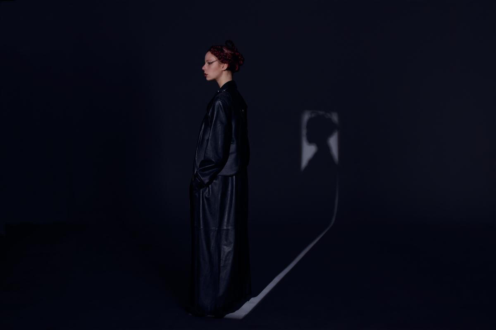

The colorated presenta "Miseria" su nuevo single
THE COLORATED presenta su nuevo y explosivo single “Miseria” (prod. Punga) ya en todas las plataformas de streaming. +Info
The Colorated es una cantante de Villa Urquiza de 20 años que respira y emana revolucion, con letras crudas de una realidad que no es para nada rosa, actitud hardcore sobre bases de trap, exponiendo situaciones injustas mediante sarcasmo y una energia incomparable. Una chica con actitud que no le importan las barbies y que odia justamente a la sociedad que espera que las mujeres sean stacey malibu. .Su estilo es una mezcla de dark-trap, dubstep, punk rock, entre otros.
THE COLORATED presenta su nuevo y explosivo single “Miseria” (prod. Punga) ya en todas las plataformas de streaming. +Info
Intendente es un dúo de productores que rapean, cantan, componen y son DJ's compuesto por Ignacio Huarte "LaDa6a del pari" y Agustín Fortuny "Rio del pari" cuayas edades rodean los 30. En su música aparecen el hip hop, el funk carioca y los géneros urbanos, pero también hay footwork, deconstructed club, house, electro, dubstep y EDM.
INTENDENTE está descosiendo la escena musical con su propuesta artística novedosa. En esta oportunidad presentamos una entrevista a estos jóvenes artistas que vinieron a cambiar el status-quo del techno experimental. +Info
Francisca Miller de 21 años es una DJ y productora de la escena del techno underground en Buenos Aires. A su vez es co-fundadora junto con Juampi Bermani de la productora de eventos Techno Moon y el sello discográfico Austro Records.
FRANZIZCA es una DJ y productora muy reconocida en la escena del under. Te invitamos a que disfrutes de su recorrido como artista y co-fundadora de la fiesta Techno Moon mirando esta entrevista. Ver video